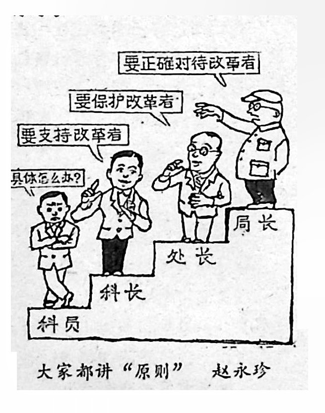

赵永珍 《人事》1987年第7期（总第22期），第46页
大家都讲“原则”
Everyone Talks “Principle”
- Text in the drawing
- 要正确对待改革者 / 要保护改革者 / 要支持改革者 / 具体怎么办？？ / 局长 / 处长 / 科长 / 科员
Treat reformers correctly / Protect reformers / Support reformers / But what exactly do we do?? / Bureau chief / Division chief / Section chief / Clerk - Description
- On a staircase of ranks, the bureau chief at the top calls for treating reformers correctly, the division chief for protecting them, the section chief for supporting them — and the clerk at the bottom asks what, concretely, he is supposed to do.
- Artist
- Zhao Yongzhen 赵永珍
- Published in
- 《人事》1987年第7期（总第22期）, p. 46
- Themes
- Reform and its implementation · Bureaucratism · Formalism

Cite
Zhao Yongzhen, “大家都讲“原则”” [Everyone Talks “Principle”], Renshi (Personnel) 《人事》, 1987, no. 7, p. 46.